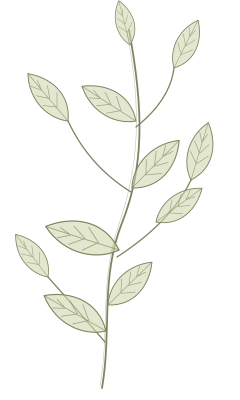
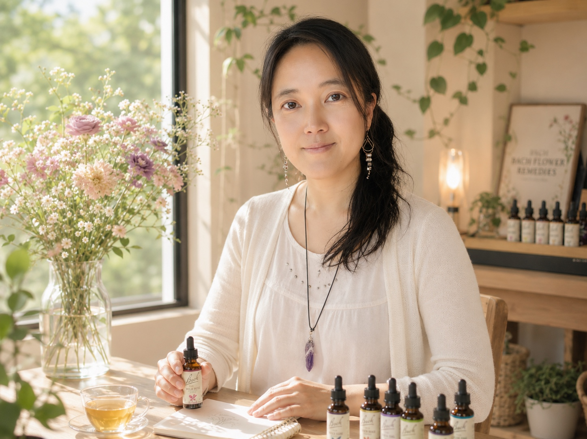
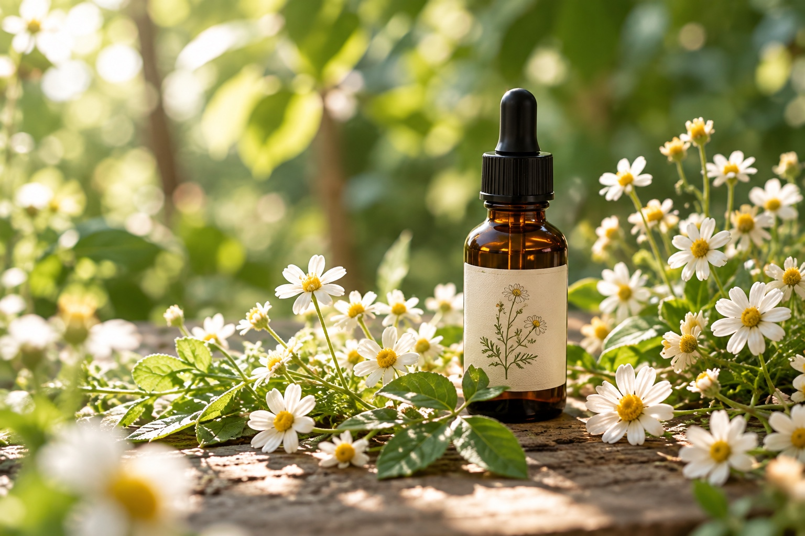

02 ／ 聽聽別人的故事
她只是想把每件事都做好。
一個關於「慢慢鬆開」的花精個案故事
真實個案故事改編羽晴跟我說：「就好像冰箱超市買了一大堆菜回來，要做好吃的，然後結果放到冰箱全都爛掉。」
羽晴是一個對工作很有想法，也很希望好好陪伴孩子長大的媽媽，她總是很努力把每一件事情做好、照顧好身旁的每個人。
只是當生活裡同時太多角色、太多期待，最後只剩下一種「想到就好累」動彈不得的狀態。
閱讀完整故事讓花精陪你走一段路
有時候，我們不是不知道該怎麼做，
只是太久沒有好好聽聽自己的聲音。
在這裡，你可以先不急著找到答案。
先讓心，有一個可以停靠的地方。
A feather way
back to yourself.
一段陪你重新理解自己內在狀態的過程。
花精諮詢是一段留給自己的談話時間。我們一起整理當下的情緒、看見反覆出現的感受，再依照你所描述的狀態，
為這些感受找到你的需要，並找出相對應的花精作為支持的選擇。
你不用一個人想清楚，也不必先把自己說得很明白，才值得被聽見。

這不是心理測驗或算命，也不是由諮詢師替你決定人生的答案。
一個關於「慢慢鬆開」的花精個案故事
真實個案故事改編羽晴跟我說：「就好像冰箱超市買了一大堆菜回來，要做好吃的，然後結果放到冰箱全都爛掉。」
羽晴是一個對工作很有想法，也很希望好好陪伴孩子長大的媽媽，她總是很努力把每一件事情做好、照顧好身旁的每個人。
只是當生活裡同時太多角色、太多期待，最後只剩下一種「想到就好累」動彈不得的狀態。
閱讀完整故事
我想陪你一起看見自己
BFRP 英國巴哈花精註冊諮詢師
我一直是一個很有自己想法，卻也很容易聽見別人聲音的人。
理性告訴我一件事，感受又說著另一件事；自己的需要很重要，別人的感受好像也同樣重要。
這些拉扯曾經讓我成為別人口中「想很多」的人，卻也讓我學會一件很重要的事情：
什麼是外在的眼光，什麼才是自己的聲音。
我也慢慢發現，有時候，光是跟一個不批判、也不急著給建議的人說說話，
就能在過程裡聽見自己：「原來，我是這樣想的。」
這也是我選擇花精諮詢的原因。
我希望尊重每個人的想法與步調，當你需要停下來整理自己的時候，
我可以陪你，好好地說，也好好地聽見自己。
BACH FLOWER REMEDIES
來自大自然的溫柔支持
巴哈花精（Bach Flower Remedies）是英國醫師 Edward Bach 所發展的 38 種花精系統，每種花精能支持所對應的不同情緒失衡狀態。
巴哈醫生相信，花精幫助我們找回平衡，但更重要的是每個人都擁有自我療癒的力量，而真正的改變，往往從願意看見自己、理解自己開始。
花精不是替你做決定，也不是替你解決人生，而是在情緒失去平衡時，提供一份溫和的支持，陪你完成你想要的蛻變。

每一種情緒，都是生命給我們的訊息。
花精溫柔地陪伴，幫助我們重新找到內在的平衡與力量。
當害怕、擔心，讓你不敢往前走。
面對強烈的恐懼、驚嚇與驚恐。
對於能夠說得出原因的人、事、物感到害怕。
害怕自己失去控制，做出不想做的事。
說不出明確原因，卻感到莫名的不安與恐懼。
過度擔心所愛之人的安全與狀況。
當你反覆思量，卻還是很難做決定。
不相信自己的判斷，常需要詢問別人的意見。
在兩個選擇之間反覆搖擺，難以下定決心。
遇到挫折或事情不順時，容易灰心、失去信心。
經歷許多嘗試之後，漸漸失去希望。
事情還沒開始，就已經覺得疲倦、提不起勁。
想找到自己的人生方向，卻不知道真正想走哪一條路。
當你對眼前的生活提不起勁，心好像不在這裡。
心思容易飄向想像與未來，難以專注於當下。
留戀過去的回憶，難以把注意力帶回現在。
對現況逐漸認命，失去想要改變的動力。
經過長時間的身心付出後，感到精疲力竭。
腦中反覆出現不想要的念頭與內在對話，難以停下來。
沒有明確原因，卻突然陷入深沉的低落與陰鬱。
容易重複相似的經驗或錯誤，還沒從過去的經驗中學習。
當別人的期待與聲音，讓你漸漸聽不見自己。
內心其實有煩惱與痛苦，外表卻總是表現得開朗、若無其事。
不容易拒絕別人的要求，常因此忽略自己的需要。
在改變、轉換或受到外界影響時，需要守住自己的方向。
被嫉妒、猜疑、憤怒、敵意等強烈情緒困擾。
當你想被理解，卻又覺得自己和別人有一段距離。
習慣獨立、不打擾別人，卻也可能因此與人保持距離。
容易因別人的速度太慢而感到急躁、不耐煩。
很需要有人陪伴與傾聽，獨處時容易感到不自在。
當挫折與自責讓心變得沉重，一時看不見前方的可能。
缺乏自信，還沒嘗試就覺得自己可能做不到。
容易責怪自己、感到內疚，即使事情未必是自己的責任。
原本有能力承擔事情，卻因一時責任太多而感到不堪負荷。
感覺已經到了承受的極限，看不到出口。
經歷驚嚇、衝擊或創傷事件後，內心仍受到影響。
對自己的遭遇感到委屈、不公平，心中累積怨懟。
即使已經很累，仍不斷撐著、繼續努力，不願停下來。
對自己的某些部分感到厭惡、不舒服或難以接受。
當你太想照顧好每一個人，也難以放下對他們的牽掛。
很在意所愛的人，也期待自己的關心與付出得到回應。
對自己相信的事情充滿熱情，容易過度投入，也希望別人認同。
對自己的判斷非常確定，容易想替別人決定什麼才是最好的。
容易注意別人的缺點與不同之處，難以包容與自己不同的方式。
對自己要求嚴格、自我約束，甚至壓抑自己的需要，希望自己符合某種標準。
有些感受，需要一點空間被好好看見。
沒有標準答案，也不需要把話說得完整。
我們會在談話裡，慢慢找到節奏。
預約前可以先說說想談的方向，了解花精諮詢，再決定是否安排時間。
從一件小事或一種感受開始。說多少、說多快，都可以依照你的步調。
整理談話裡浮現的情緒，討論花精選擇與你想帶回生活的覺察。
為自己留一些觀察的空間。是否再次諮詢，可以依照後續需要討論。
還在想適不適合，也可以先聊聊。
有些事情，不一定要想得很清楚才值得被說出來。
只要心裡有一點想改變的念頭，就值得給自己一個機會，坐下來聊聊。
原價 NT$1,500
NT$1,200
如果你是第一次接觸巴哈花精，或一直對花精感到好奇，卻不知道它適不適合自己，可以先從一次體驗開始。
體驗方案包含一次正式花精諮詢＋30ml個人調配瓶
一人僅限一次
如果你正經歷人生中的幽谷，也可以看看公益陪伴計畫。
有疑問，是很自然的事。在開始之前，先多了解一點。
可以。不需要先整理出完整的問題，我們可以從最近的一件事、一個念頭，或「不知道怎麼說」開始。你也可以保留還沒準備好談的部分。
不一樣。這裡提供以情緒覺察與花精選擇為核心的談話，不提供心理診斷，也不替代心理諮商或醫療照護。
不需要。比起熟悉花精名稱，更重要的是你此刻的感受。我們會在對話中介紹相關的花精概念，讓選擇是可以理解、可以討論的。
不必等到無法承受才關心自己。生活中的疲憊、猶豫，或只是想更了解自己的情緒，都可以作為談話的起點。
正式花精諮詢約 60 分鐘。關於線上或實體安排，以及可預約時段，歡迎透過頁尾 LINE 詢問，或填寫預約表單確認。
可以。歡迎透過頁尾 LINE 或 Facebook 詢問，再決定是否預約，不需要立即做出選擇。
你不需要事先知道自己是什麼狀態，
也不需要準備一份完整的人生故事。
如果可以，諮詢前只要留意：
帶著這些感受來，就可以了。
預約花精諮詢一個關於「慢慢鬆開」的花精個案故事
那是一個秋天的午後，我和羽晴約在她家附近的咖啡廳碰面🍂
羽晴跟我說，她最近遇到了瓶頸，不太知道下一步要怎麼走，想找我聊聊，也想試試花精能否幫上忙。
第一次和羽晴說話的時候，我最直接的感覺是：
她的思緒好多，好難捕捉她的思緒😶🌫️
一個話題才剛開始，很快又想到另一個可能；說到一件事情，又會延伸出另一件想做的事。
工作、家庭、孩子、生活，還有那些她真正有興趣、很想投入的事情。
她是一個很想兼顧家庭與事業的媽媽。
她說：「我有好多 idea，但是我覺得好像我做……真正去實踐的不夠，沒有達到我想要的那麼多。」
她也說：「我有意識到：嗯，好，我要慢下來一點。那慢下來後，甚至盤點出說在我腦袋裡的專案，哇，超過十個。我這幾乎是在 run 一個公司了吧。」
因為每一件事情都很在乎，所以對自己也有很多要求。
孩子要照顧好，工作要做好，自己想做的事情也不想放掉。
最後留下的，反而是一種自我批判和緊張焦慮感：
「就是一直在這種想法很多，但我覺得在執行上好像……沒辦法 fulfill、滿足我對自己的期待吧。」😣
還有滿滿的無力感：
「就覺得：哎呀，我現在想不到啊，想晚一點再來面對。啊，我現在好痛苦，我現在應該照顧一下我自己。」🥺
那天我一邊聽，一邊努力跟著她的思緒跑，甚至忍不住有點苦笑：
「等等，我們剛剛到底講到哪裡了？」
不是因為她沒有方向。
反而是因為她同時看見的東西太多了。
她自己也很清楚：「我有很多想做的，但是我覺得我沒有辦法做那麼多。」
後來談到「累」的時候，她又說：
「想到就累了，但真的實際做又可以做。」
那時候我開始覺得，也許她真正卡住的地方，並不是「做不到」。
而是還沒開始，就已經先在腦袋裡把自己累了一輪。
談著談著，我們開始把這些混在一起的感受，一個一個拆開來看。
她提到，當事情很多、壓力一下子湧上來時，自己很容易冒出一個念頭：
「就很沒用啊。」
「覺得自己很沒用。」🫠
但當我們再確認花精的選擇時，她自己又修正了這個說法：
「我覺得前面描述很像，但是我覺得我會用的描述是不確定、是不知道怎麼辦。」🫤
我很喜歡這個小小的轉折。
「我很沒用」和「我不知道怎麼辦」，
其實是兩件很不一樣的事情。
一個是在否定自己，
一個是在描述自己當下的狀態。
而她還有一個非常生動的比喻。
她說：
「就好像冰箱超市買了一大堆菜回來，要做好吃的，然後結果放到冰箱全都爛掉。」🥬🥦🥗🥕
那一刻，我覺得她其實已經把自己的循環說得很清楚了。👀
看見很多事情。
想把它們全部做好。
因為沒有完成而焦慮。
又因為焦慮，更難開始。
然後再回過頭來責怪自己。
一段時間後，羽晴回來做第二次花精諮詢🌸
她一坐下就告訴我：
「我覺得我這次轉變很大。」
她說，這段時間自己好像鬆了很多。
以前常常因為焦慮緊張睡不著，半夜兩、三點還突然想到：
「啊，還有哪些事沒做？」
現在，那種腦袋塞得滿滿的感覺少了很多。
而這個改變，更具體地出現在一件非常日常的小事裡。
那天，她要幫孩子做學校的成長故事小書。
回顧孩子的成長，裡面有寫不完的故事。
如果是以前，她可能會開始想：
「這些是不是都要做好？」
「我要怎麼全部完成？」
但這一次，她很自然地說：
「哎，挑八個就好了。」
然後她自己也發現：
「我覺得好像比較能夠去看見什麼是更重要的事情，那個排序。」
我覺得這句話很重要。
因為她開始看見的，不只是「我比較不焦慮了」。
而是：原來，我可以選擇。
不是每一件事情都同樣重要。
不是每一件事情都需要做到同樣的程度。
有些事情，可以做八個。
有些事情，可以放一下。
而以前那個「我要把它做好」的標準，也開始鬆開了一點。
她說：
「以前比較會覺得說好像『我要把它做好』。」
現在則是：
「我就這樣，就是這樣。」
回頭看羽晴這一次的變化，我覺得很有意思。
因為她並沒有突然變成一個完全不同的人。
她還是那個有很多想法、很多熱情、很願意把事情做好的人。
也還是會希望把事情做好。
只是，原本塞得滿滿的地方，好像開始多了一點空間。
以前是：
「這些事情我都想做。」
後來變成：
「哎，挑八個就好了。」
以前是：
「我要把它做好。」
後來變成：
「我就這樣，就是這樣。」
也許所謂的「鬆開」，
並不是從此什麼都不在乎，
也不是突然變得很會安排事情。
而是開始知道：
有些事情可以排序。
有些事情可以放下。
有些事情不用做到最好。
而有些時候，接受自己
「做到這裡，就已經可以了。」🌿
＊為保護個案隱私，本文已使用化名並調整部分可辨識資訊；內容經個案同意後分享。